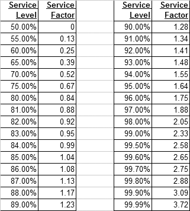

* Service level: The expected probability of not hitting a stock-out during the next replenishment cycle or the probability of not losing sales
Cycle Stock :
Safety Stock1 (most basic method // Safety date: Supplyleadtime x 1/5) :
Safety Stock2 (In case of uncertainty about the demand) :
Safety Stock3 (In case of uncertainty about the leadtime) :
Safety Stock4 (In case of uncertainty about lead time and demand) :